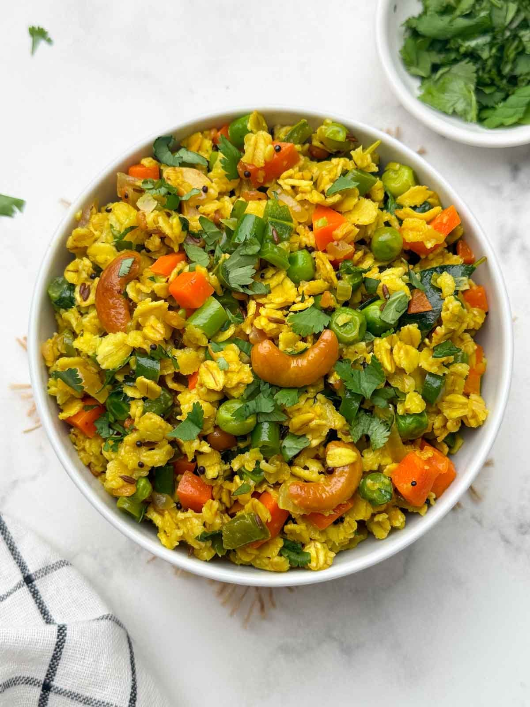
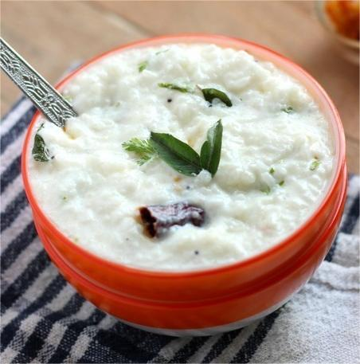
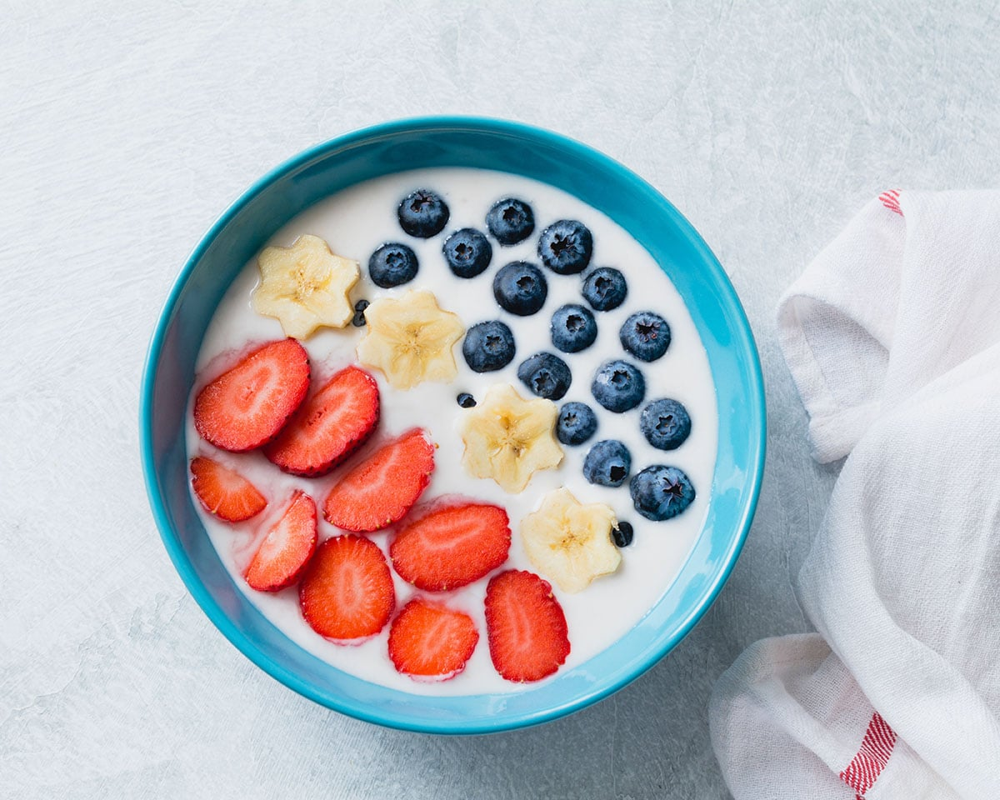
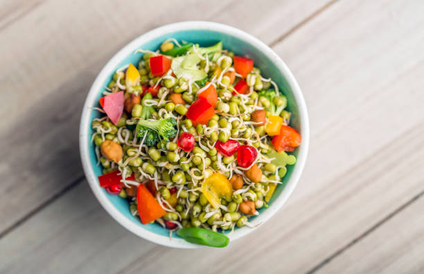
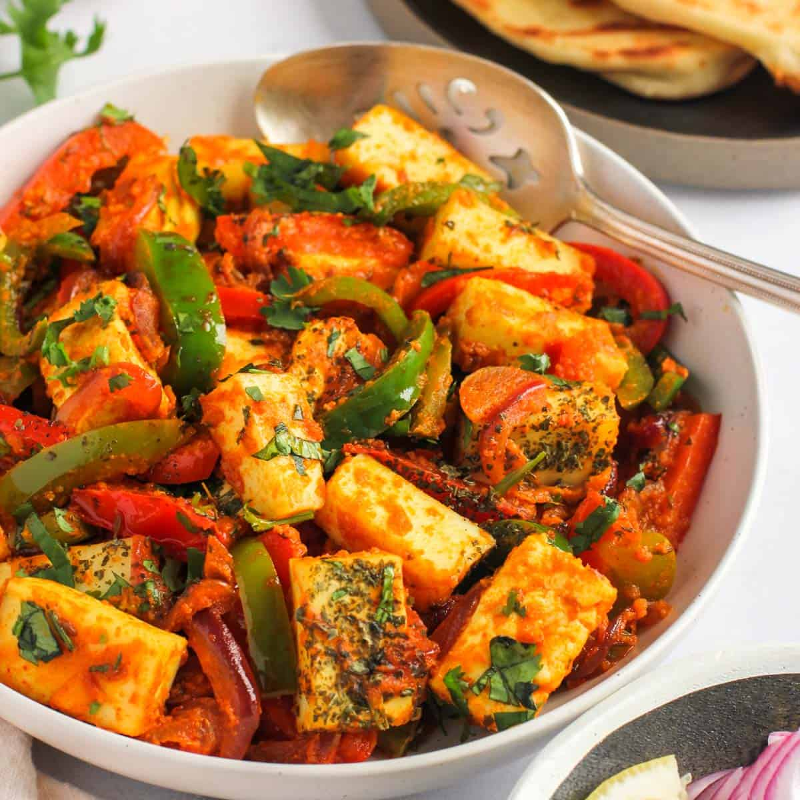

Healthy Recipes

Vegetable Oats
Nutritious, fiber-rich meal ideal for breakfast or dinner.
Benefit: Helps improve digestion, keeps you full longer, and supports heart health.
Ingredients
- 1 cup rolled oats
- 2 cups water or vegetable stock
- 1 onion (finely chopped)
- 1 carrot (grated)
- ½ cup mixed vegetables
- 1 tsp olive oil
- Salt & pepper
Method
- Heat oil in a pan and sauté onions until soft.
- Add vegetables and cook for 3–4 minutes.
- Mix in oats and lightly roast for 30 seconds.
- Add water/stock and seasoning.
- Simmer until oats are soft and creamy.

Curd Rice
Cooling, probiotic-rich comfort food.
Benefit: Improves gut health, cools the body, and aids digestion.
Ingredients
- 1 cup cooked rice
- 1½ cups fresh curd
- Salt to taste
Method
- Mash cooked rice slightly.
- Add curd and salt.
- Mix well until creamy.
- Serve chilled or at room temperature.

Fruit Yogurt Bowl
Refreshing bowl packed with vitamins.
Benefit: Boosts immunity, improves skin health, and provides natural energy.
Ingredients
- 1 cup thick yogurt
- ½ cup mixed fruits
- 1 tbsp honey
- 1 tbsp nuts/seeds
Method
- Add yogurt to bowl.
- Top with chopped fruits.
- Drizzle honey.
- Sprinkle nuts and serve.

Vegetable Soup
Light, warm and digestion-friendly.
Benefit: Hydrates the body, boosts immunity, and supports weight management.
Ingredients
- 1 cup chopped vegetables
- 2 cups water or broth
- 1 garlic clove
- Salt & pepper
Method
- Sauté garlic lightly.
- Add vegetables and water.
- Simmer for 10–15 minutes.
- Season and serve hot.

Sprouts Salad
High-protein, fresh and filling.
Benefit: Builds muscle, improves metabolism, and provides plant-based protein.
Ingredients
- 1 cup steamed sprouts
- 1 onion (chopped)
- 1 tomato (chopped)
- Lemon juice
- Salt
Method
- Mix sprouts with vegetables.
- Add salt and lemon juice.
- Toss well and serve fresh.

Paneer Vegetable Stir Fry
Protein-rich quick healthy meal.
Benefit: Strengthens bones, supports muscle growth, and keeps you energized.
Ingredients
- 100g paneer cubes
- 1 cup mixed vegetables
- 1 tsp oil
- Salt & spices
Method
- Heat oil and sauté paneer.
- Add vegetables and stir fry.
- Season and cook until tender.
- Serve warm.